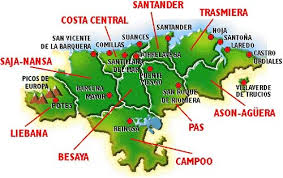
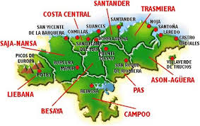

Noja

ciudades en los siguientes enlaces:

Noja |
|
|
Cantabria es una comunidad del norte de españa, que destaca por su gran paisaje tanto de montaña como de costa, su gastronomia y sus ciudades y pueblos,cada uno con una cultura y tradiciones que los hacen unicos.
 |
Podeis visitar una pequeña reseña de algunas ciudades en los siguientes enlaces:
TorrelavegaComillasCorralesNojaMenú principal |